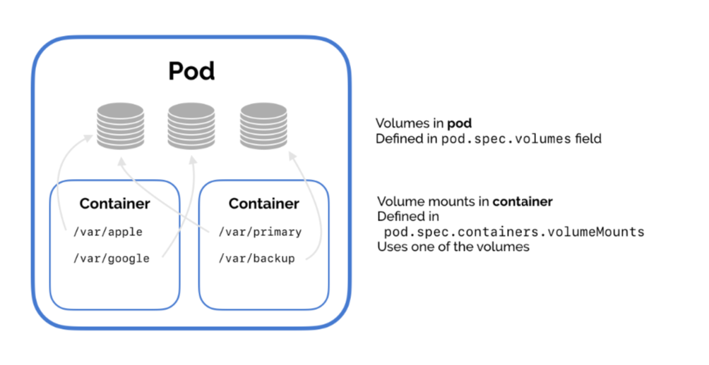

Learn Kube Faster.
Get the #1 guide.
Get my book on Kubernetes for software developers, used by engineers at Google, Microsoft, and IBM.
Get BookThis is a guide that covers:
In Kubernetes, each container can read and write to its own, isolated filesystem.
But, data on that filesystem will be destroyed when the container is restarted.
To solve this, Kubernetes has volumes. Volumes let your pod write to a filesystem that exists as long as the pod exists.
Volumes also let you share data between containers in the same pod.
But, data in that volume will be destroyed when the pod is restarted.
To solve this, Kubernetes has persistent volumes. Persistent volumes are long-term storage in your Kubernetes cluster.
Persistent volumes exist beyond containers, pods, and nodes.
A pod uses a persistent volume claim to to get read and write access to the persistent volume.
| Type of storage | How long does it last? |
|---|---|
| Container filesystem | Container lifetime |
| Volume | Pod lifetime |
| Persistent volume | Cluster lifetime |
There are two steps for using a volume.
First, the pod defines the volume.
Second, the container uses volumeMounts to add that
volume at a specific path (mountPath) in its filesystem.

Then, the container reads and write to the volume just like a normal directory.
One of the most useful types of volumes in Kubernetes is nfs.
NFS stands for Network File System – it's a shared filesystem that can be accessed over the network.
The NFS must already exist – Kubernetes doesn't run the NFS, pods in just access it.
An NFS is useful for two reasons.
One, what's already stored in the NFS is not deleted when a pod is destroyed. Data is persistent.
Two, an NFS can be accessed from multiple pods at the same time. An NFS can be used to share data between pods!
This is really useful for running applications that need a filesystem that’s shared between multiple application servers. You can use an NFS to run Wordpress on Kubernetes!
This tutorial and sample YAML gives you a simple example of how to use an NFS volume in Kubernetes.
For this short guide, we’ll use an existing NFS server image and run it in Kubernetes. In practice, you might use a GCP data store or some Firebase storage as your NFS.
We’ll use the cpuguy83/nfs-server image, run it in a Kubernetes pod, and expose that pod via a service.
Create the resources with kubectl apply -f nfs-server.yaml.
(Side note. This might not work for Docker for Mac users. I got an error saying “Not starting NFS kernel daemon: no support in current kernel.” You should be able to use Minikube instead.)
This is the important part.
Here, we add the NFS volume to the pod. Set its server and path
values to point to the NFS server.
Then, mount the NFS volume in the container. In our example, we write the date to the file in the network filesystem every five seconds.
(You’ll need to change the IP address in the YAML to the IP address of the service we set up earlier. Theoretically you should be able to use Kubernetes’ internal DNS resolution, but I couldn’t get that to work.)
Create the pod with kubectl apply -f pod.yaml.
Now, check that the NFS volume works.
You can use the NFS volume from the example above to share data between pods in your cluster.
Just add the volume to each pod, and add a volume mount to use the NFS volume from each container.
Get my book on Kubernetes for software developers, used by engineers at Google, Microsoft, and IBM.
Get Book